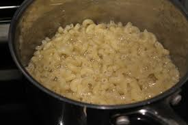
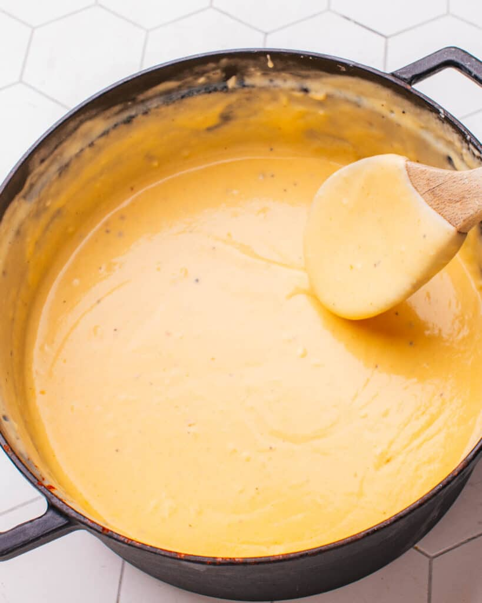
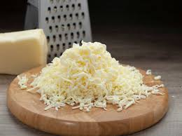
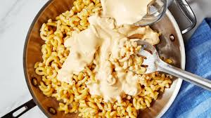
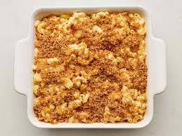
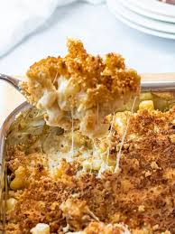

Steps
Step 1: Cook The Pasta
Cook the elbow macaroni in a large pot of salted
boiling water according to the package
instructions (usually 8-10 minutes), until al dente. Drain and set aside.

Step 2: Make the Cheese Sauce
1. In the same pot, melt 3 tablespoons of butter over medium heat.
2. Once the butter has melted, add 3 tablespoons of flour to make a roux. Stir constantly for about 1-2 minutes, until the mixture is lightly golden (this will help thicken your sauce).
3. Gradually add the 2 cups of whole milk, whisking continuously to prevent lumps. Keep whisking until the sauce thickens, which should take about 3-4 minutes.
4. Season the sauce: Stir in the 1/4 tsp black pepper, 1 tsp Dijon mustard, 1/2 tsp garlic powder, and 1/4 tsp smoked paprika. Taste and adjust the seasoning as needed.

Step 3: Add the Cheese
Lower the heat to low and stir in the 2 cups of sharp cheddar cheese
and 1 cup of mozzarella cheese. Stir until the cheese is fully melted
and the sauce is smooth.

Step 4: Combine the Pasta and the Sauce
1. Add the cooked macaroni to the sauce and stir to combine,
ensuring all the pasta is coated with the cheesy sauce.
Remove from heat.

Step 5: Make the Breadcrumb Topping
1.Preheat your oven to 350°F (175°C).
2. In a small skillet, melt a little butter or heat a small amount of oil over medium heat.
3. Toast the breadcrumbs for 2-3 minutes, stirring frequently,
until they are golden brown and crispy.
You can add a pinch of salt
or a dash of smoked paprika to enhance the flavor of the topping, if desired.

Step 6: Assemble and Bake(optional)
1. If you'd like a crispy baked topping, transfer the mac and cheese to a baking dish (like an 8x8 or similar size).
2. Sprinkle the toasted breadcrumbs evenly over the top of the mac and cheese.
3. Bake in the preheated oven for about 15-20 minutes, or until the top is golden and crispy.
